The game
You are Ruth. You and three survivors reach the west fence of an abandoned prison. Break in, clear it zone by zone, lock the gate behind you and turn it into a fort.
Then the real work starts. Run the base for thirty days: build projects, give people jobs, hold the fence on horde nights and raid the dead town for scrap, parts, fuel and, above all, more people. On day 30 a convoy passes for one hour. How you leave depends on what you built and who is still alive.
Features
A base you manage and a town you fight your way through, played from above.
Clear it, then run it
Break into the prison and clear six zones of dormant dead with a shotgun, a rifle or an SMG. Then manage the base: a long list of projects, needs, a roster and a defence plan.
Raid the dead town
Seven places with their own maps: a supermarket, a hospital, a police station, an industrial yard, a port with a quay, an airport with a runway and a stadium. Go by day or by night, in clear weather, rain or fog.
The heat meter
Every shot, door and car alarm adds heat. Stay quiet and the dead sleep. Get loud and they stir, then hunt you, then overrun the place. Loot slowly with a knife, or grab fast and run.
A squad that thinks
Companions stay close, call out special infected and fall back to you instead of chasing. When the coast is clear they search containers on their own and carry the loot to the truck.
A crew with jobs
Guards help build by day and climb back to their towers at dusk or when the dead come. Gardeners, haulers, cooks and mechanics keep the base alive. Every person you rescue counts.
Horde nights
Hordes hit the fence on set nights, with screamers, bloaters, hunters and breachers among them. Mend the fence, hold the gate, light the yard and keep the towers manned.
A prison that lives
Rain and storms roll through, lamps glow at dusk, and the crew slowly clears the filth and makes the place feel like home. The prison looks different on day 20 than on day 1.
Scarcity that bites
Scrap, parts, fuel, food, water and morale all run down. Reload your own rounds, salvage a trickle of scrap, and decide what is worth a risky trip.
Day 30
The convoy arrives for one hour. Its parts and fuel list, your people and your walls decide which ending you get.
Loud or quiet
Each raid has one meter that tells you how close the dead are to noticing you.
Screenshots
Taken from the game itself, unedited.

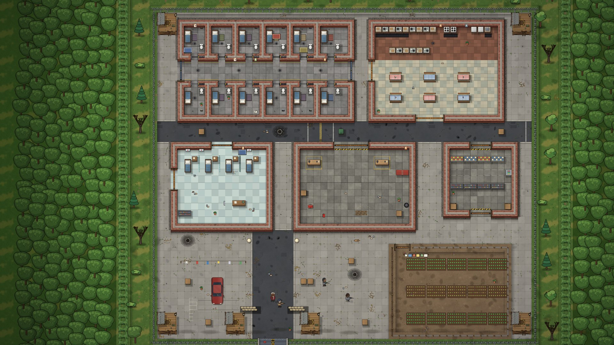

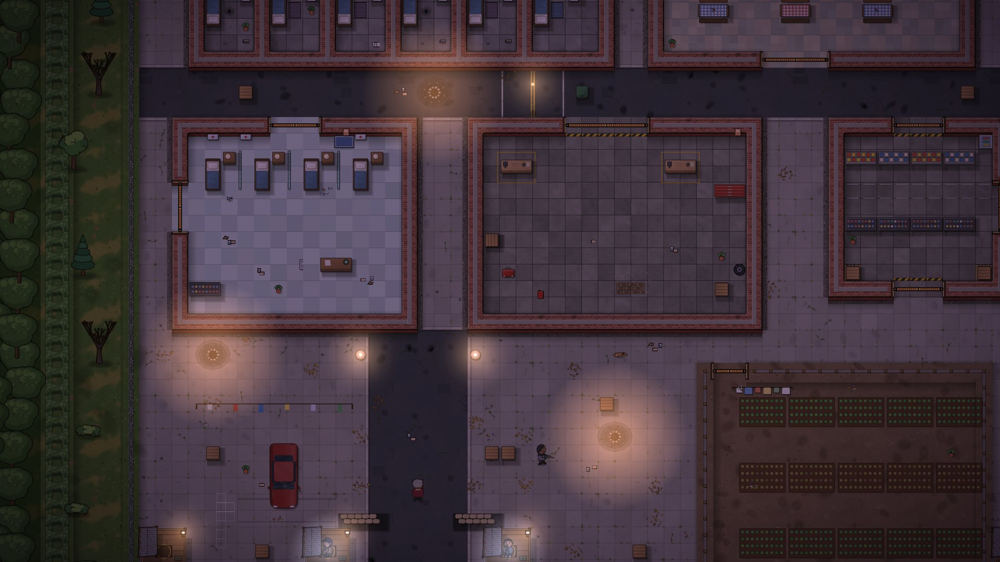

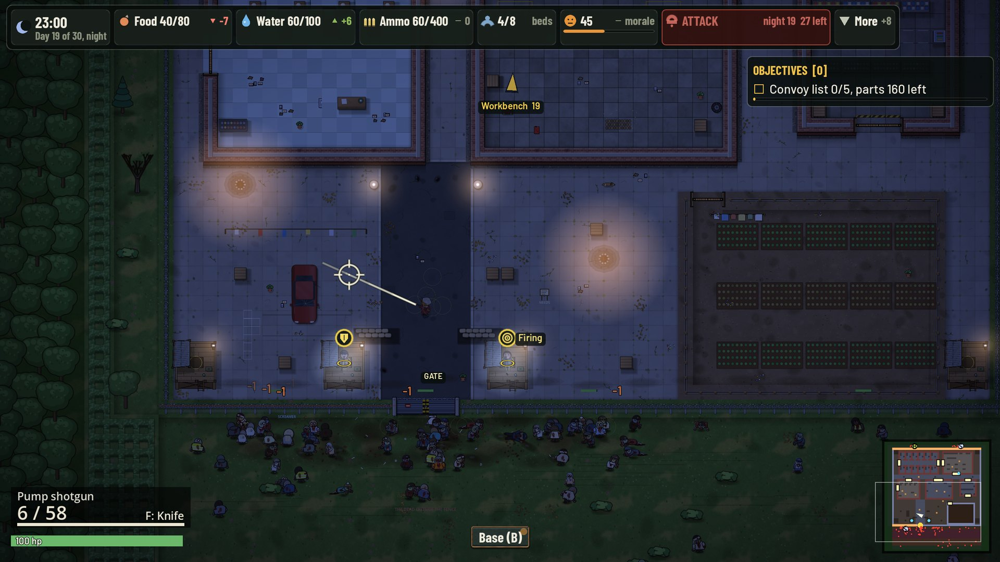

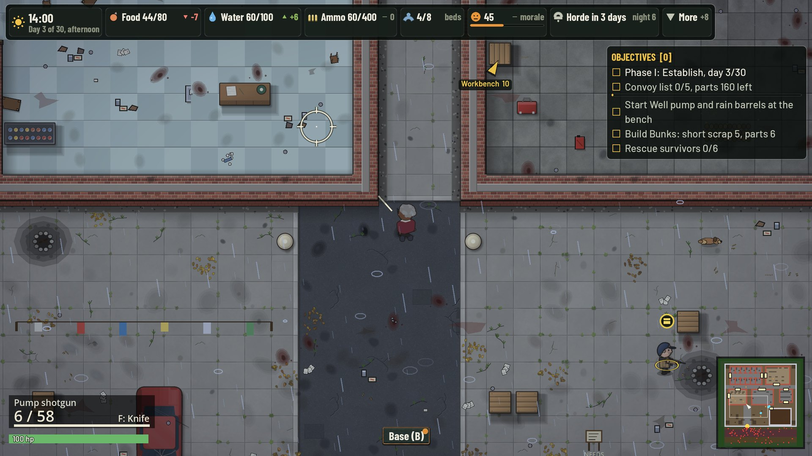

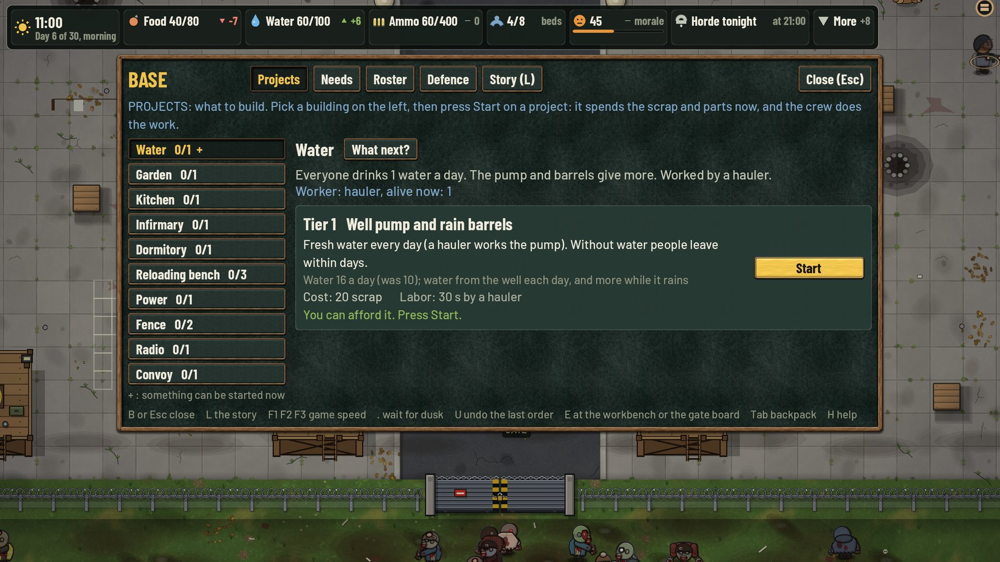

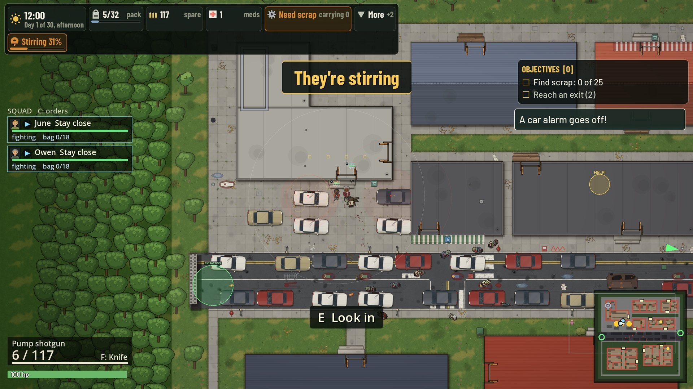

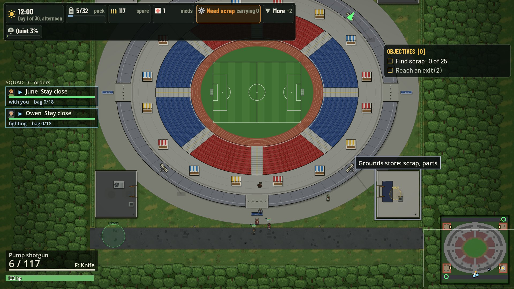

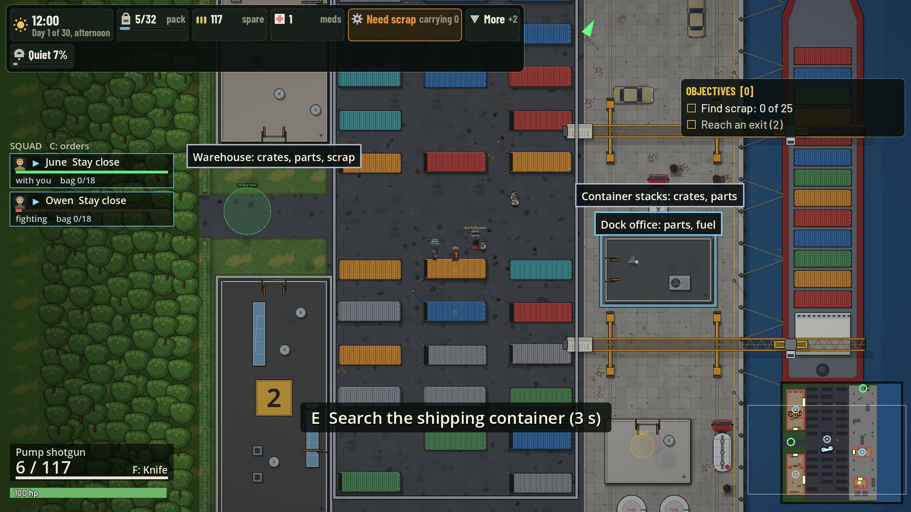

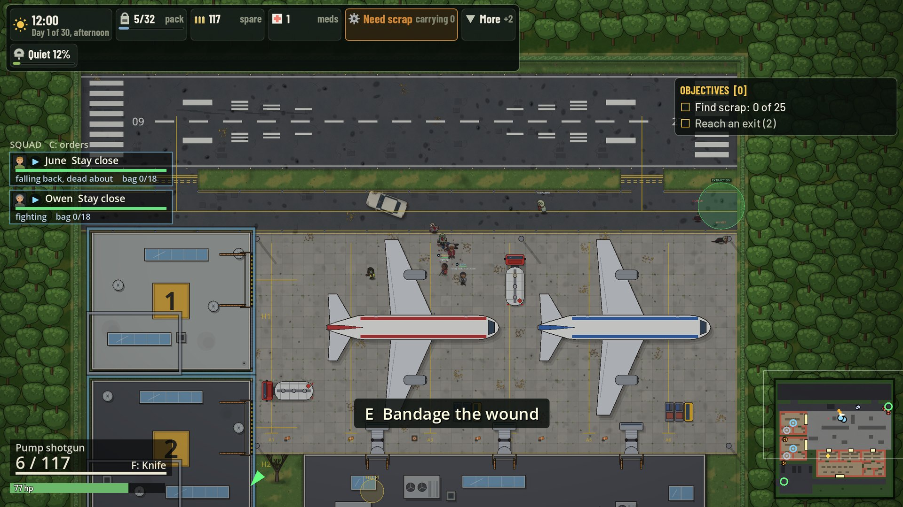

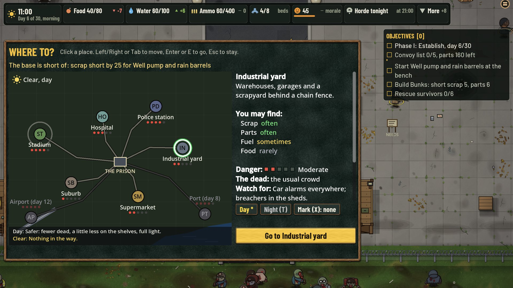

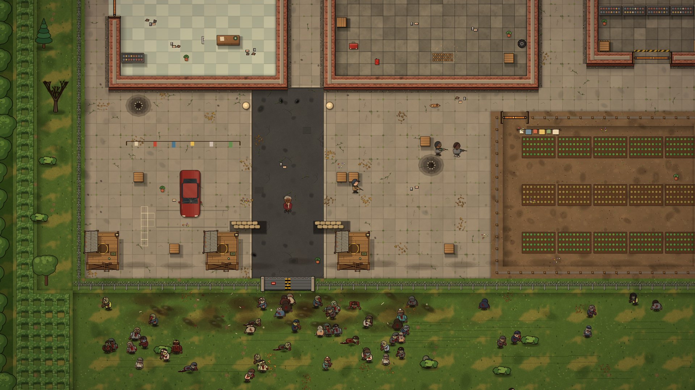
Status
Early playtest build. The whole game plays from the first clear to the day-30 ending, but the balance is unproven and it has been tested mostly by bots so far.
How it is made. Built in Godot 4 with GDScript. Much of the code and text was written with an AI coding assistant. The pixel-style art is drawn by code and scripts. The sound effects are real recordings from free libraries (Kenney, CC0, and the Sonniss GDC game audio bundles).